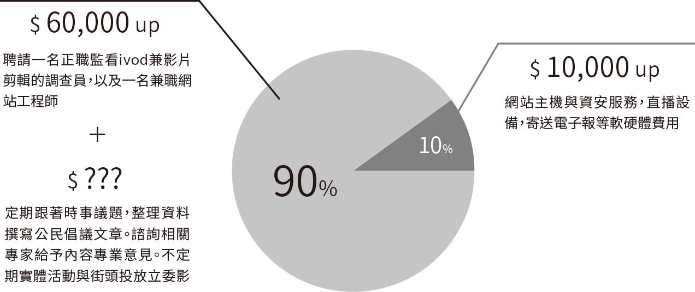

你很關心政治，但每天看政論節目，
除了看來賓罵來罵去，
對政策也沒有因此變得比較了解。
人家說政黨政治是責任政治，
但你並不相信政黨間的會彼此監督，
曾經期望媒體可以扮演好揭露真相的角色，
卻發現媒體也會跟著財團轉彎。
到頭來發現什麼都不能相信，
只能靠自己，卻又不知道自己能做什麼。
當媒體抄社群網路當作新聞成了風氣，
我們相信越多人願意願意分享訊息，
媒體就會跟風報導大家真正在乎的議題。
我們持續的監督國會，
邀請更多人一起看見國會，分享社會議題，
讓更多人了解監督國會的重要性。
在政府面前所有的公民都是小人物，
但只要能聚在一起，小蝦米也能對抗大鯨魚！
頂新餿水油事件發生的時候，當時醫界立委蘇清泉說：「『檢驗合格應該可以吃！』即使是由皮革油煉出來，裡面重金屬的鎘，都是合格的。」
亞泥在太魯閣把山頭挖的千瘡百孔，經濟部通過亞泥的採礦權延展被大家抗議的時候，官員說無法撤銷許可會有國賠問題。
這些事，都發生在立法院
立委是人民選出來制定生活規則的代表，但選上後，他將背負黨意、地方樁腳的壓力與政治捐款的誘惑，選舉不過就是四年一次，民意在這些因素面前顯得一點都不重要，你認為他會怎麼選擇？
但如果大家願意天天看並且天天分享，讓立委感受到民意的壓力，感受到人民不接受呼嚨，對跑紅百帖跟綜藝式表演不買帳，他們才能夠真正的體會到人民的力量，重新思考他們應該要怎麼做。
既然希望政府施政要讓人民有感
那就用自己的力量讓立委「有感執政」
一滴水滴在石頭上，沒有人相信石頭會被穿透。但水若滴久了，終能穿透石頭。
我們相信更多人的分享，就能告訴媒體大家真正在乎什麼事。我們相信更多人一起回報立委新聞影片，就能建立立委真實表現的履歷。
我們相信只要持續產出國會影片，提供大家更多元的立委與官員的表現資訊，將能夠幫助大家在選舉的時候，淘汰掉不適任的立委與政黨。
有你的支持與參與，一杯紅茶也能改變國會！
國會調查兵團youtube
累積觀看次數超過
國會調查兵團網站
累積資料筆數超過
公民廟口自產立委影片
累積影片數超過
蒂瑪小姐咖啡館
累積文章數超過
505,279觸及人數
238,215影片觀看次數
22,162心情、留言和分享
694,079觸及人數
214,800影片觀看次數
18,435心情、留言和分享
438,445觸及人數
178,202影片觀看次數
22,886心情、留言和分享
498,180觸及人數
172,454影片觀看次數
16,078心情、留言和分享
645,942觸及人數
150,951影片觀看次數
8,703心情、留言和分享
603,323觸及人數
117,168影片觀看次數
15,942讚、留言和分享
538,746觸及人數
102,164影片觀看次數
9,260心情、留言和分享
255,160觸及人數
90,689影片觀看次數
9,272心情、留言和分享
323,688 觸及人數
84,178 影片觀看次數
7,500 心情、留言和分享
774,101觸及人數
37,738心情、留言和分享
696,933觸及人數
23,266讚、留言和分享
689,091觸及人數
26,170讚、留言和分享
611,660觸及人數
32,719讚、留言和分享
490,729觸及人數
17,306心情、留言和分享
403,097觸及人數
18,658讚、留言和分享
358,273觸及人數
17,588心情、留言和分享
352,900觸及人數
8,963讚、留言和分享
261,495觸及人數
11,444心情、留言和分享
251,776觸及人數
7,691讚、留言和分享
189,363觸及人數
7,549讚、留言和分享
156,046觸及人數
4,325讚、留言和分享
如果不希望仰賴傳統媒體的資訊，我們必須要自己下去監看立法院，長期盯場需要正職人員。2015 年 11 月我們向公民覺醒聯盟提出專案企劃，支應一年多的人事與軟硬體費用。未來我們必須靠自己的能力活下去，以自營自足、社會企業的方式讓「國會調查兵團」計畫可以持續進行。

【公民廟口】
每月產出至少 8 隻監督影片
【蒂瑪小姐咖啡館】
每月產出至少 3 篇文章
【公民廟口】
每月產出至少 16 隻監督影片
【蒂瑪小姐咖啡館】
每月產出至少 6 篇文章
【國會調查兵團】
立委言行資料庫網站改版更新
【公民廟口】
每月產出 20 隻監督影片 + 1 場公民廟口開講直播
【蒂瑪小姐咖啡館】
每月產出至少 8 篇文章
【國會調查兵團】
立委言行資料庫網站改版更新
【實體活動】
每月 1 場專題推廣講座